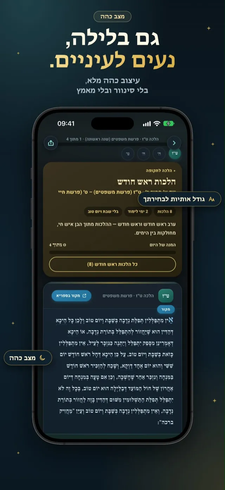
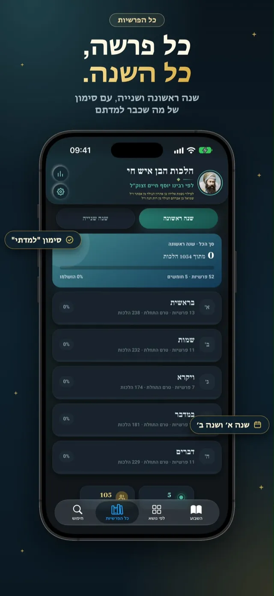
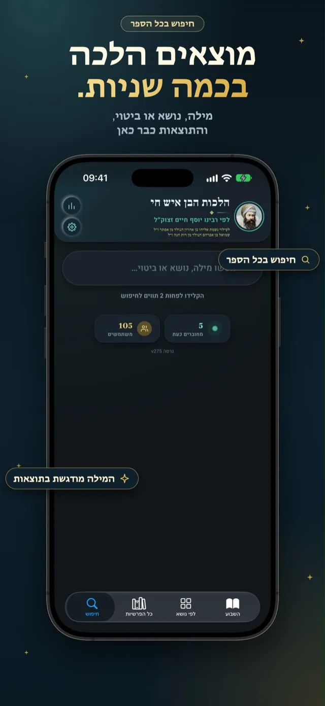
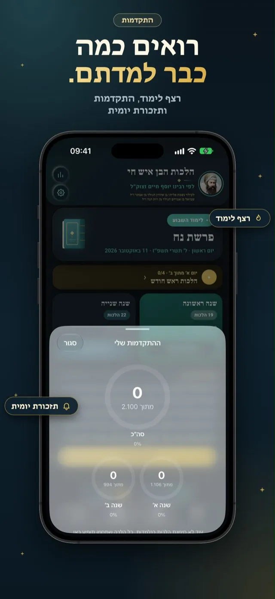

בן איש חי
הלכות הבן איש חי
הלכה אחת ביום, לפי סדר הפרשות של הבן איש חי, בעברית פשוטה. פותחים, קוראים, וממשיכים ביום.
האפליקציה
ככה היא נראית






בקצרה
מה יש בפנים
הפרשה נבחרת לבד
בכל שבוע האפליקציה פותחת את פרשת השבוע, ולפני כל חג מופיעות הלכות החג.
שנה א׳ ושנה ב׳
שתי שנות הלימוד של הספר, בביאור בעברית פשוטה.
לפי נושא
אפשר ללמוד גם לפי נושאים: תפילה, ברכות, שבת, כשרות ועוד.
חיפוש ומעקב
חיפוש בכל הספר, סימון "למדתי", מועדפים והתקדמות.
נעים לקריאה
מצב כהה לקריאה בלילה, ותזכורת יומית.
בלי אינטרנט
האפליקציה עובדת גם בלי חיבור לאינטרנט.
חינם, בלי פרסומות
האפליקציה חינמית, בלי פרסומות ובלי חשבון.
עוד מאיתנו